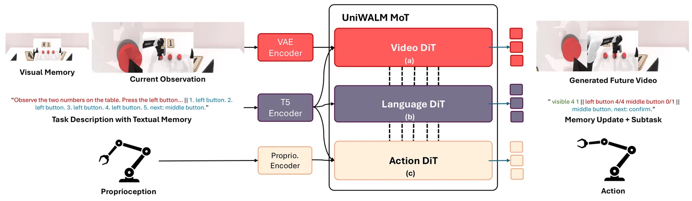
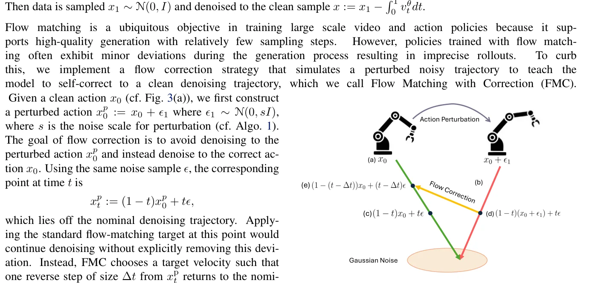
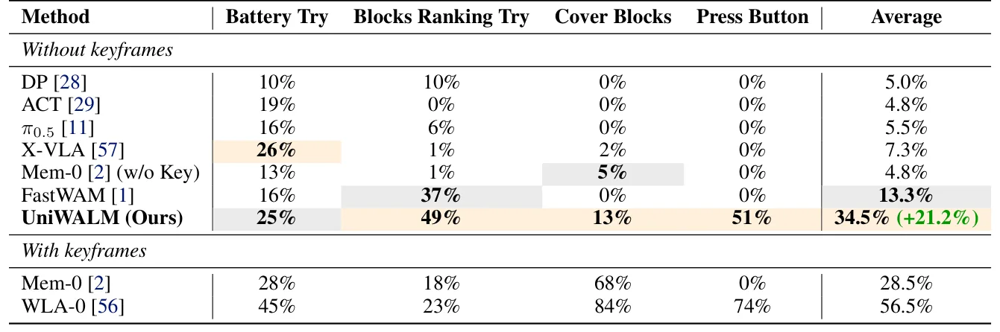
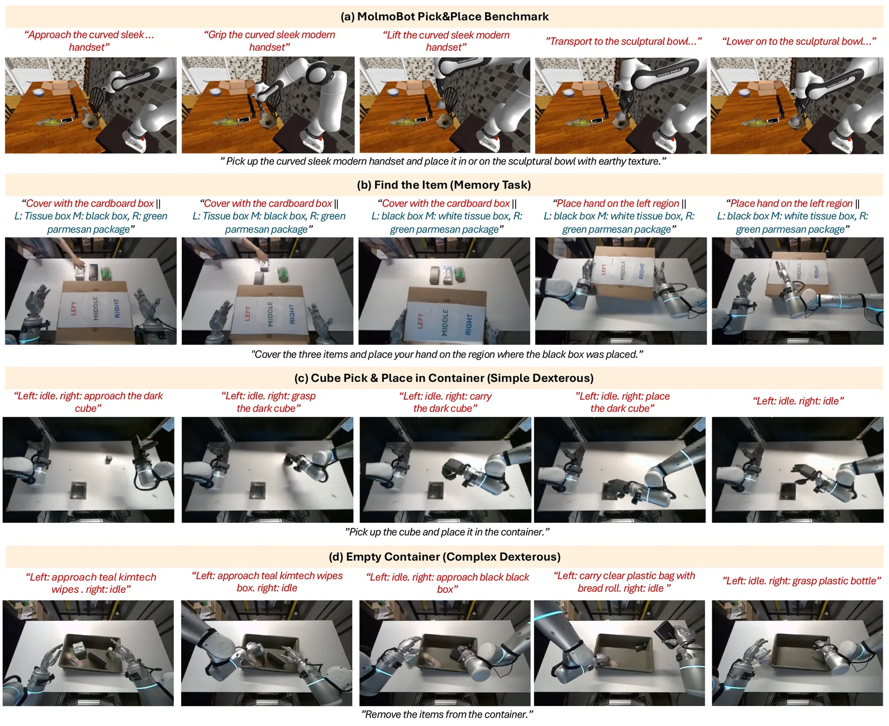

O Problema da Fragmentação em Robótica Embodied
Os modelos de robótica atuais, conhecidos como Vision-Language-Action (VLA), enfrentam um dilema arquitetônico. Eles geralmente tratam a percepção visual, o raciocínio linguístico e o controle motor como processos distintos. Para realizar uma tarefa complexa, o sistema precisa de um modelo de linguagem grande (VLM) para entender o contexto, um modelo de mundo para prever o futuro ou um planejador externo para quebrar a tarefa em subtarefas, e finalmente um controlador de baixo nível para executar o movimento. Essa separação não apenas aumenta a latência, mas também cria gargalos de informação.
Além disso, a memória é um ponto fraco crítico. Em tarefas que exigem lembrar onde algo foi visto há vários passos atrás, as abordagens atuais dependem de buffers de recuperação externos ou de keyframes privilegiados que muitas vezes não estão disponíveis no mundo real. Sem uma representação unificada, o robô esquece o estado anterior da tarefa assim que o quadro visual muda, levando a falhas em sequências longas.
Os autores do UniWALM, pesquisadores da Brown University, Amazon e outras instituições, propõem uma mudança de paradigma: em vez de acoplar módulos separados, eles criam um único modelo unificado que co-genera vídeo, linguagem e ação. A linguagem, neste framework, não é apenas um descritor externo, mas serve como memória de trabalho ativa, reutilizada passo a passo para manter o contexto da tarefa.

A Arquitetura UniWALM: Um Único Backbone, Três Saídas
O núcleo do UniWALM é um modelo de difusão baseado em Video DiT, estendido para lidar com três modalidades: vídeo, linguagem e ação. Diferente de modelos híbridos que usam um VLM para gerar texto e depois alimentam esse texto em um controlador de ação, o UniWALM usa uma arquitetura de Mixture-of-Transformers (MoT) única. Nesta arquitetura, as representações de vídeo, linguagem e ação são co-denoisadas em uma única passagem. Isso significa que o modelo aprende a gerar um quadro de vídeo futuro, uma descrição textual da próxima subtarefa e os comandos de ação para os motores do robô ao mesmo tempo, todas derivadas de uma representação latente compartilhada.
O processo começa com a observação atual (frames de vídeo), a instrução da tarefa em linguagem natural, a propriocepção e, opcionalmente, uma memória visual (um frame âncora inicial). O backbone processa essas entradas e, através de cabeças de difusão específicas para cada modalidade, gera as saídas. A inovação crucial aqui é que a linguagem gerada não é descartada. Ela é consumida como entrada no próximo passo de tempo, criando um loop de memória linguística interna.
Essa abordagem elimina a necessidade de um planejador de alto nível separado. A planning emerge da própria capacidade do modelo de prever a sequência lógica de ações e descrições. Ao treinar o modelo para prever não apenas o próximo frame de vídeo, mas também o próximo estado da tarefa em linguagem, o modelo aprende uma estrutura de longo alcance que liga a ação imediata ao objetivo final.



Limitações e Considerações Finais
Apesar dos resultados promissores, o UniWALM não é uma solução perfeita. A arquitetura depende de um backbone de vídeo de alta qualidade, o que pode ser computacionalmente custoso para implantação em tempo real em hardware embarcado limitado. Além disso, a geração de linguagem, embora eficaz como memória, ainda pode sofrer de alucinações ou inconsistências se o modelo não for suficientemente treinado para a tarefa específica.
Os experimentos no mundo real foram realizados em ambientes controlados com objetos bem definidos. A generalização para cenários não estruturados, com iluminação variável, oclusões severas ou objetos desconhecidos, ainda precisa ser explorada. Também é importante notar que o modelo foi avaliado principalmente em tarefas de manipulação de mesa. Sua eficácia em tarefas de locomoção ou manipulação de maior escala permanece em aberto.
Em resumo, o UniWALM representa um passo significativo na direção de robôs embodied mais integrados e cognitivamente plausíveis. Ao unificar visão, linguagem e ação em um único modelo e usar a linguagem como memória de trabalho, ele demonstra que é possível superar as limitações de arquiteturas modulares fragmentadas. No entanto, a eficiência computacional e a robustez em ambientes do mundo real continuam sendo desafios a serem enfrentados.
O que fica
- UniWALM unifica vídeo, linguagem e ação em um único backbone de difusão, eliminando a necessidade de planejadores externos ou VLMs separados.
- A linguagem gerada internamente atua como memória de trabalho, sendo reutilizada no próximo passo, o que melhora drasticamente o desempenho em tarefas que exigem memória de longo prazo.
- O método Flow Matching with Correction (FMC) estabiliza as trajetórias de ação durante o treinamento, resultando em movimentos mais precisos sem custo adicional na inferência.
- Em benchmarks de memória como o RMBench, o UniWALM supera significativamente métodos que dependem de buffers de recuperação externos ou keyframes privilegiados.
Paper original: UniWALM: Unified World Action Language Model for Embodied Robot Control
Comentários
Nenhum comentário ainda. Seja o primeiro.